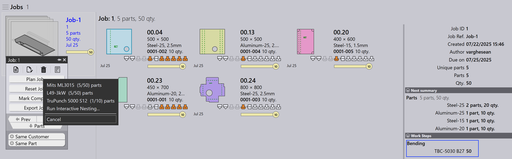

Auto plan
Auto Plan automatiserer planlægningsprocessen for bukning og skæreoperationer. Den hjælper med at optimere maskinanvendelsen, reducere materialespild og styre jobprioriteter effektivt.
Den generelle arbejdsgang er først at planlægge delene til bukemaskinerne og derefter planlægge delene til skæremaskinerne.
Bukningsplan
En Bukningsplan definerer, hvordan dele fordeles på tilgængelige bukemaskiner.
Eksempel: Bukningsplan for 5 Dele (10 enheder hver).
-
Klik på Planlæg job… valgmuligheden.
-
5 dele (50 enheder) tildeles TBC-5030 B27
-
Efter planlægning opdateres jobstatus til Bend Planned for i alt 50 enheder. Arbejdstrinnene opdateres med de tildelte bukemaskiner og delantal.


Skæreplan - nesting
Efter bukningsplanen oprettes skæreplanen ved at neste dele på egnede skæremaskiner. Der er to måder at neste på:
Plan job for nest - job
Brug Planlæg job… til at neste alle dele i jobbet sammen. Nestingmotoren behandler automatisk alle dele baseret på jobprioritet, leveringsdato og materiale. Dette er ideelt, når De ønsker, at hele jobbet skal nestes og sendes til skærekøen på én gang.
-
Klik på Planlæg job… og vælg en hvilken som helst maskine.
-
Pmonitor-motoren starter nestingjobbet.
-
Motoren opdeler jobbet efter behov for at maksimere pladeanvendelsen.
| Det er ikke muligt at neste ved at tildele specifikke materialer til specifikke maskiner. For eksempel kan De ikke neste Material1 på Machine1 og Material2 på Machine2 i samme operation. |

Her nestes hele jobbet i 5 nests på L49-3kw. Jobstatus opdateres til 50 : Cutting Queue.
Plan part for nest - ordre
Brug Plan Part til nesting på ordreniveau — det vil sige, kun at neste udvalgte dele fra jobbet. Typisk højreklikker De på en del og vælger Same Material, så kun dele med samme materiale grupperes og nestes sammen.
Dette er nyttigt, når De ønsker at kontrollere, hvilke dele der nestes — for eksempel dele af samme materiale eller et specifikt parti.


-
På Job Detail-siden højreklikker De på en hvilken som helst del og vælger Same Material. Alle dele med samme materiale vælges.
-
Klik på Plan Part… og vælg en maskine til nesting.
-
Motoren behandler kun de valgte dele og opretter nests.

Her nestes steel-25 på Mits ML3015.